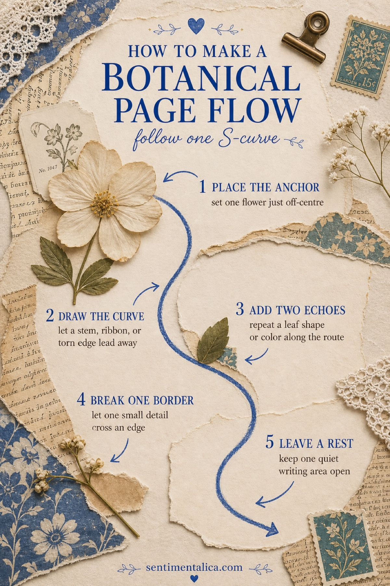
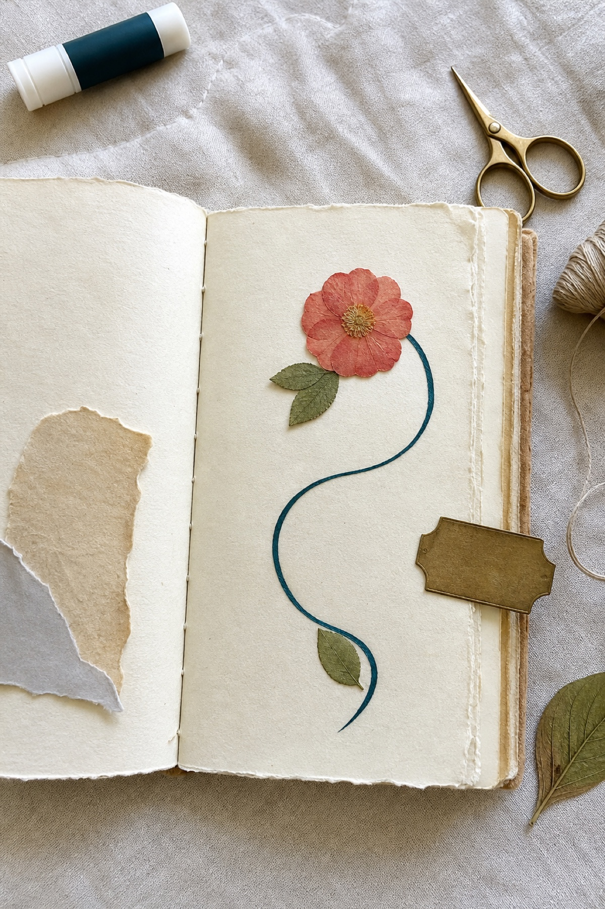
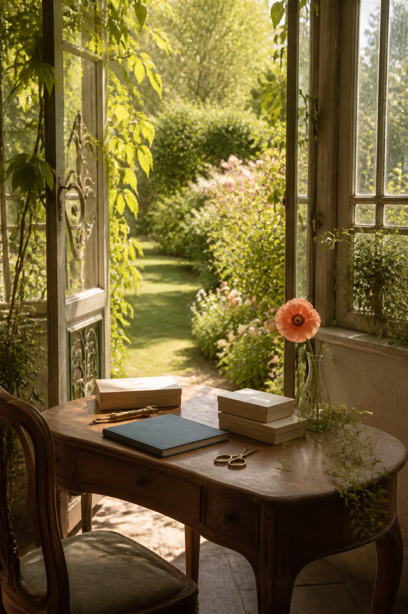
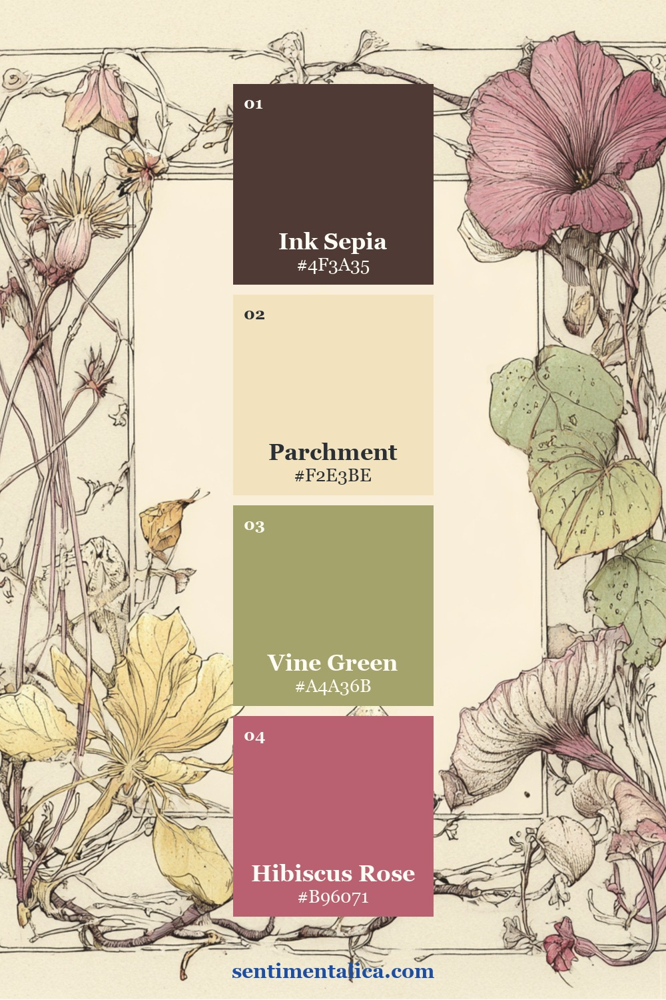
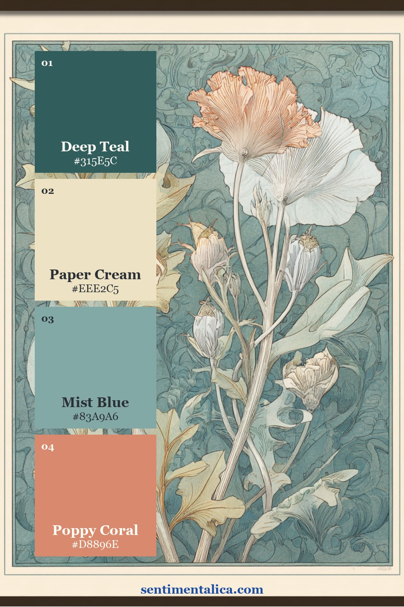
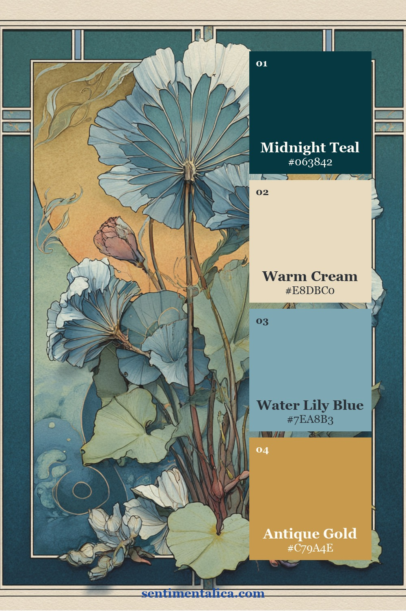
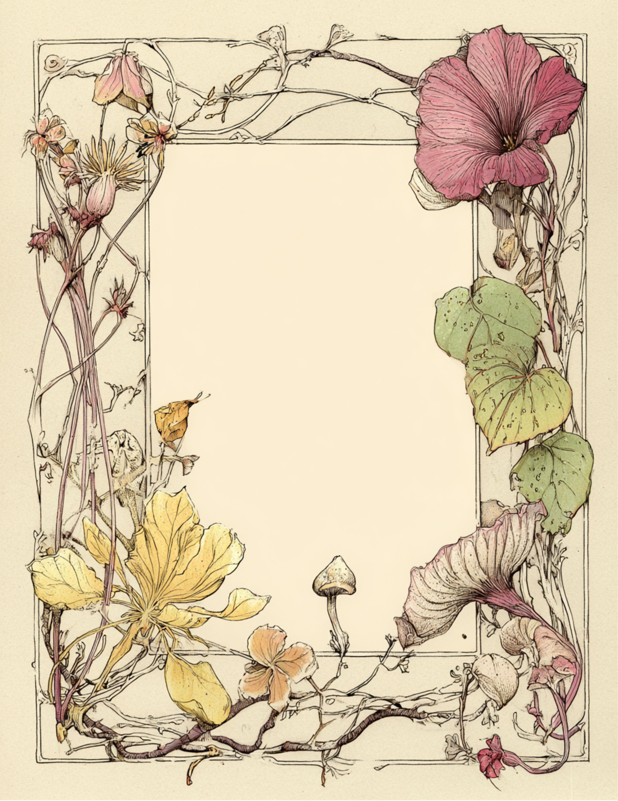
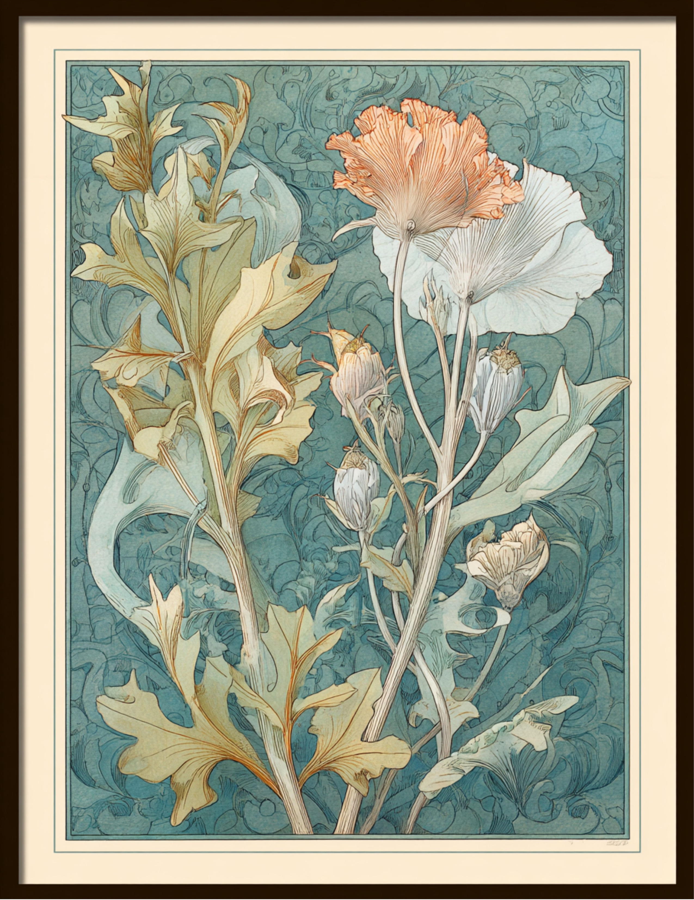
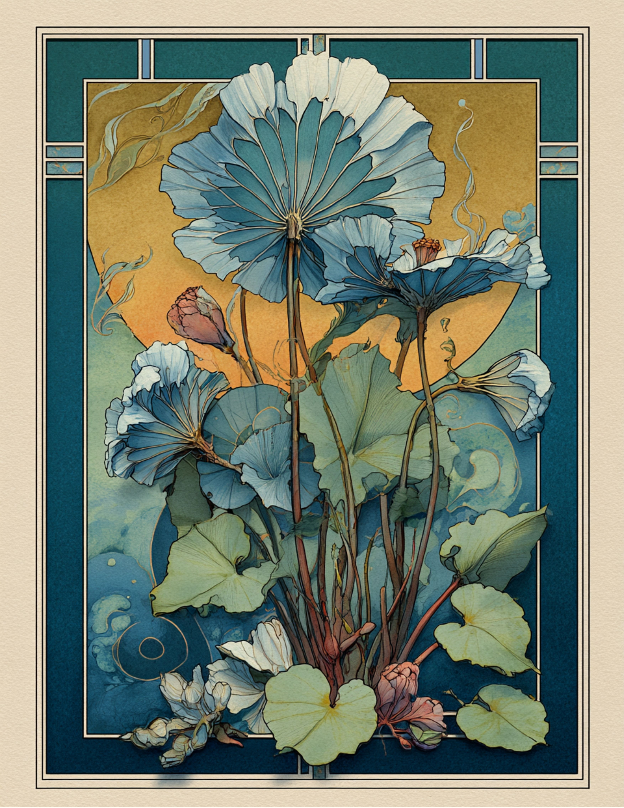

A botanical junk journal page can contain beautiful flowers, labels, and old paper yet still feel strangely stiff. Usually the page does not need another decoration. It needs a route for the eye to follow.
Try building that route as one loose S-curve. Begin with a strong botanical anchor, let a stem or torn edge carry the movement away from it, and place only a few echoes along the same path. The curve does not need to be visible when the page is finished. It is simply a quiet guide for deciding where each piece belongs.

Start with one off-centre anchor
Choose the flower, photograph, ticket, or written note that should be noticed first. Place it slightly above or below the middle and a little to one side. A perfectly centred image can make the page feel formal; an off-centre anchor leaves somewhere for the composition to travel.
Before gluing, turn the image and look for its natural direction. A face may look inward. A blossom may lean left. A curved frame may open toward the writing area. Let that direction decide where the rest of your S will go.
Build one curve, not several
Imagine a line entering near one corner, passing through the anchor, and leaving near the opposite edge. A printed stem can carry part of it. Continue the route with ribbon, thread, handwriting, a torn paper edge, or the angle of a small label.
You do not need to draw the curve. Lay a piece of thread over the unfinished page for a moment, arrange the materials beside it, then remove the thread before gluing. If two large pieces pull the eye in opposite directions, turn one, trim it, or save it for another spread.

Place two echoes along the route
An echo is a small repetition, not a duplicate focal point. Repeat one leaf shape, one coral mark, one circle, or one fragment of handwritten script. Place one echo before the anchor and another after it so the eye discovers them in order.
Vary the scale. If the anchor is a large rose, the echoes might be a tiny rose stamp and a torn scrap that repeats its pink. Three equally large flowers compete; one large flower and two quieter reminders feel related.
Break one border
Let one small element cross an edge: a leaf can overlap a frame, a tab can extend beyond the page, or a ticket can sit half inside a pocket. This creates movement because the composition seems to continue beyond its rectangle.
Choose only one border-break. When every layer escapes every edge, the page loses its boundaries and becomes restless. One interruption feels intentional.
Leave somewhere for the eye to rest
Keep a quiet area opposite the densest cluster. It might be bare cream paper, a pale writing panel, or a soft wash with enough room for a date. This is not an unfinished part of the page. It is what makes the detailed parts readable.

Three palettes for different kinds of movement
Color can reinforce the route. Repeat a restrained accent along the S-curve and keep the surrounding neutrals generous. These three palettes were sampled from authentic Botanical Nouveau pages.



Hibiscus Line suits a soft writing page with a dark ink anchor. Teal Poppy gives the curve more contrast while keeping the coral warm. Water Lily Gold feels deeper and more ornamental; use the gold in only two or three small places so it remains an accent.
If you want to practise the method with a single image first, choose one from the 100 free floral pictures. Place it off-centre, follow one natural stem, add two echoes from paper scraps, and stop while the page still has breathing room.
Look for the route inside real botanical pages
The first page below wraps a flowing border around a quiet writing centre. The second carries the eye upward through tall poppy stems. The third uses water lilies and gold details to fan outward from a deep teal base. Each page creates movement differently, but each also preserves a clear place to pause.



When a botanical page feels crowded, do not ask what else it needs. Find the anchor, trace the route, and remove anything that interrupts it. One curve, two echoes, one broken border, and one quiet place will usually give the page all the movement it needs.
Find more practical composition ideas in the Sentimentalica journal archive.